Amino Acids
Amino acids are carboxylic acids that bear an amine group. The most common of these in nature are the 2-amino acids, or α-amino acids, which have the general formula RCH(NH2)COOH; that is, the amino function is located at C2, the α-carbon. The R group can be alkyl or aryl, and it can contain hydroxy, amino, mercapto, sulfi de, carboxy, guanidino, or imidazolyl groups. Because of the presence of both amino and carboxy functions, amino acids are both acidic and basic.
More than 500 amino acids exist in nature, but the proteins in all species, from bacteria to humans, consist mainly of only 20. Adult humans can synthesize all but eight, and two only in insufficient quantities. This group is often called the essential amino acids because they must be included in our diet. Although amino acids can be named in a systematic manner, they rarely are; so we shall use their common names. Table 1 lists the 20 most common amino acids, along with their structures, their pKa values, and the three- and (the newer) one-letter codes that abbreviate their names. We shall see later how to use these codes to describe peptides conveniently.
Acid base properties of amino-acids
An amino acid is a compound that contains both a carboxyl group and an amino group that makes the image above not accurate because it shows an acid (−COOH) and a base (−NH2) within the same molecule. These acidic and basic groups react with each other to form a dipolar ion or internal salt. The internal salt of an amino acid is given the special name zwitterion. Note that a zwitterion has no net charge; it contains one positive charge and one negative charge.
Because they exist as zwitterions, amino acids have many of the properties associated with salts. They are crystalline solids with high melting points and are fairly soluble in water but insoluble in nonpolar organic solvents such as ether and hydrocarbon solvents.
The structure of an amino acid in aqueous solution depends on the pH. Consider, for example, the simplest member of the series, glycine. The major form in neutral solution is the zwitterion. However, in strong acid (pH < 1), glycine exists predominantly as the cationic ammonium carboxylic acid, whereas strongly basic solutions (pH > 13) contain mainly the deprotonated 2-aminocarboxylate ion. These forms interconvert by acid-base equilibria.
| H2NH+−CH2COOH | OH− ⇌ H+ | H2NH+−HCH2COO− | OH− ⇌ H+ | H2NCH2COO− |
| Increasing pH ⟶ | ||||
All of the amino acids used to form proteins are polyprotic acids. Glycine, for example, is a diprotic acid, whereas other aminoacids such as aspartic acid are triprotic acidsTable 1 records pKa values for each functional group of the amino acids. For glycine, the first value (pKa1 = 2.3) refers to the equilibrium
| H2N+−CH2COOH + H2O | ⇌ | H3N+−CH2COO− | + H3O+ |
K1 = [H3N+−CH2COO−][H3O+] / [H3N+CH2COOH] = 10−2.3
Note that this pKa is more than two units less than that of an ordinary carboxylic acid (pKa CH3COOH = 4.74), an observation that is true for all the other α-aminocarboxy groups in Tab.1. This greater acidity is accounted for by the electron-withdrawing inductive effect of the adjacent −NH3+ group.
The second pKa value (9.6) describes the second deprotonation step:
| H3N+−CH2COO− + H2O | ⇌ | H2N−CH2COO− | + H3O+ |
K1 = [H2N−CH2COO−][H3O+] / [H2NCH2COO−] = 10−9.6
At the isoelectric point, the net charge is zero
The pH at which the extent of protonation equals that of deprotonation is called the isoelectric pH or the isoelectric point (pI). At this pH, the amount of positive charge balances that of negative charge and the concentration of the charge-neutralized zwitterionic form is at its greatest. Zwitterions are electrically neutral and so do not migrate in an electric field.
For an amino acid without any additional acidic or basic groups, such as glycine, the value of its pI is the average of its two pKa values.
in the case of glycine, pKa1 and pKa2 are 2.3 and 9.6, respectively, so that the isoelectric point is 6.0. At pH values below this, the cation and zwitterion will coexist in equilibrium in a ratio determined by
Chirality: The stereocenter of common 2-amino acids has the S configuration
In all but glycine, the simplest of the amino acids, C2 is a stereocenter and usually adopts the S configuration. Other stereocenters located in the substituent R may have either R (as in threonine) or S configuration (as in isoleucine).
As in the names of the sugars (Section 24-1), an older amino acid nomenclature uses the prefixes D and L, which relate all the L-amino acids to (S)-2,3-dihydroxypropanal (L-glyceraldehyde). As emphasized in the discussion of the natural D sugars, a molecule belonging to the L family is not necessarily levorotatory. For example, both valine ([α]D25°C = +13.9) and isoleucine (([α]D25°C = +11.9) are dextrorotatory.
The vast majority of carbohydrates in the biological world are of the D-series, whereas the vast majority of α-amino acids in the biological world are of the L-series. As we saw for carbohydrates, the L designation for amino acids is based on analogy to the chiral center of glycer-aldehyde. Note the similarity of the L-alanine and L-glyceraldehyde chiral centers in the Figure. Some students assume that the L designation is based upon optical activity and that samples of all L-amino acids must rotate the plane of plane-polarized light in the levorotatory (−) direction. This is not true. In fact, many samples of L-amino acids rotate the plane of plane-polarized light in the dextrorotatory (+) direction. The L designation of amino acids refers only to structural similarity to the reference compound, L-glyceraldehyde, not any experimentally measured parameter. The alternative R,S convention is also used to specify the configurations of amino acids. According to this convention, L-alanine is designated (S)-alanine. Although the D,L method of designating the stereochemistry of amino acid chiral centers is awkward, the historical use of this system is so deeply rooted in the scientific literature that it is still the most commonly used when referring to amino acids as well as carbohydrates. We will therefore use the D,L convention throughout the remainder of this chapter.
Protein-Derived Amino Acids
Table 27.1 gives common names, structural formulas, and standard three-letter and one-letter abbreviations for the 20 common L-amino acids found in proteins. The amino acids in this table are divided into four categories: those with nonpolar side chains, polar but unionized side chains, acidic side chains, and basic side chains. The following structural features of these amino acids should be noted.
All 20 of these protein-derived amino acids are a-amino acids, meaning that the amino group is located on the carbon alpha to the carboxyl group.
For 19 of the 20 amino acids, the α-amino group is primary. Proline is different; its α-amino group is secondary.
With the exception of glycine, the α-carbon of each amino acid is a chiral center. Although not shown in this table, all 19 chiral amino acids have the same relative configuration at the α-carbon. In the D,L convention, all are L-amino acids. According to the R,S convention, amino acid α-carbons, with the exception of cysteine, have the S configuration. Because of priority rules, the presence of the sulfhydryl group on the side chain of L-cysteine gives the chiral center the R configuration.
Isoleucine and threonine contain a second chiral center. Four stereoisomers are possible for each amino acid, but only one is found in proteins.
The sulfhydryl group of cysteine, the imidazole group of histidine, and the phenolic hydroxyl of tyrosine are partially ionized at pH 7.0, but the ionic form is not the major form present at this pH.
In the following table, each ionizable group is shown in the form present in highest concentration at pH 7.0.
| R | Name | pKa1 | pKa2 | pKa of acidic function in R | Isoelectric point, pI |
|---|---|---|---|---|---|
| H | 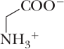 Glycine (Gly, G) | 2.3 | 9.6 | − | 6.0 |
| Alkyl group | |||||
| −CH3 | 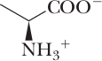Alanine (Ala, A) | 2.3 | 9.6 | − | 6.0 |
| −CH(CH3)2 | 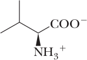Valine (Val, V) | 2.3 | 9.6 | − | 6.0 |
| −CH2CH(CH3)2 | 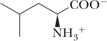Leucine (Leu, L) | 2.4 | 9.6 | − | 6.0 |
| −CHCH3CH2CH3 | 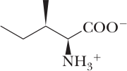 Isoleucine (Ile, I) | 2.4 | 9.6 | − | 6.0 |
| −H2C−Ph | 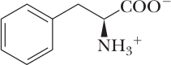 Phenylalanine (Phe, F) | 1.8 | 9.1 | − | 5.5 |
| 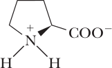 Proline (Pro, P) | 2.0 | 10.6 | − | 6.3 | |
| Hydroxy containing | |||||
| −CH2OH | 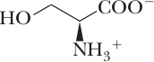 Serine (Ser, S) | 2.2 | 9.2 | − | 5.7 |
| −CH−(CH3)OH | 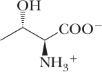 Threonine (Thr, T) | 2.1 | 9.1 | − | 5.6 |
| −H2C−Ph−OH | 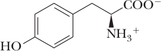 Tyrosine (Tyr, Y) | 2.2 | 9.1 | 10.1 | 5.7 |
| Amino containing - Basic Side Chains | |||||
| −CH2CONH2 | 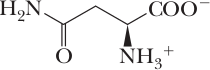 Asparagine (Asn, N) | 2.0 | 8.8 | − | 5.4 |
| −CH2CH2CONH2 | 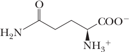 Glutamine (Gln, E) | 2.2 | 9.1 | − | 5.7 |
| −(CH2)4NH2 | 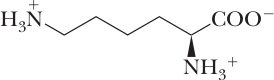 Lysine (Lys, K) | 2.2 | 9.0 | 10.5 | 9.7 |
| −(CH2)3NHC=NHNH2 | 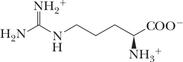 Arginine (Arg, R) | 2.2 | 9.0 | 12.5 | 10.8 |
| 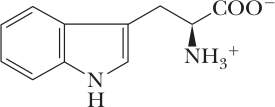 Tryptophan (Trp, W) | 2.8 | 9.4 | − | 5.9 | |
| 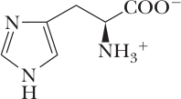 Histidine (His, H) | 1.8 | 9.2 | 6.1 | 7.6 | |
| Mercapto or sulfide containing | |||||
| −CH2SH | Cysteine (Cys, C) | 2.0 | 10.3 | 8.2 | 5.1 |
| −CH2CH3SCH3 | 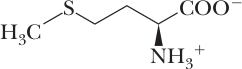 Methionine (Met, M) | 2.3 | 9.2 | − | 5.7 |
| Carboxy containing | |||||
| −CH3COOH | 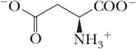 Aspartic acid (Asp, D) | 1.9 | 9.6 | 3.7 | 2.8 |
| −CH3CH2COOH | 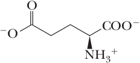 Glutamic acid (Glu, E) | 2.2 | 9.7 | 4.3 | 3.2 |
Some Other Common L-Amino Acids
Although the vast majority of plant and animal proteins are constructed from just these 20 a-amino acids, many other amino acids are also found in nature. Ornithine and citrulline, for example, are found predominantly in the liver and are an integral part of the urea cycle, the metabolic pathway that converts ammonia to urea.
Thyroxine and triiodothyronine, two of several hormones derived from the amino acid tyrosine, are found in thyroid tissue. Their principal function is to stimulate metabolism in other cells and tissues.

4-Aminobutanoic acid is found in high concentration (0.8 mM) in the brain but in no significant amounts in any other mammalian tissue. It is synthesized in neural tissue by decarboxylation of the α-carboxyl group of glutamic acid and is a neurotransmitter in the central nervous system of invertebrates and in humans as well.
enzyme-catalyzed
decarboxylation
⟶
(γ-Aminobutyric acid, GABA)
+ CO2
Only L-amino acids are found in proteins, and only rarely are D-amino acids a part of the metabolism of higher organisms. Several D-amino acids, however, along with their L-enantiomers, are found in lower forms of life. D-Alanine and D-glutamic acid, for example, are structural components of the cell walls of certain bacteria. Several D-amino acids are also found in peptide antibiotics.
The branched chain amino acids (BCAAs) are leucine, valine and isoleucine. A multi-million dollar industry of nutritional supplements has grown around the concept that dietary supplements of BCAAs alone produce an anabolic response in humans driven by a stimulation of muscle protein synthesis. Unlike most other amino acids, which are degraded mainly in the liver, the branched-chain amino acids are degraded predominantly in extra-hepatic tissues, mainly in muscle, because extra-hepatic tissues have higher activities of the transaminases for the branched-chain amino acids and of the enzyme branched-chain α-ketoacid dehydrogenase, the second enzyme in the degradation pathways for branched-chain amino acids, than does the liver. Normally, the nitrogen from branched-chain amino acids is transported to the liver for removal as urea, but in some physiological states it is diverted for use by other tissues. Oxidation of branched-chain amino acids in muscle serves two functions. The first is the generation of ATP, and the second is the synthesis of glutamine, which effluxes from the muscle. The highest rates of branched-chain amino acid oxidation occur under conditions of acidosis, in which there is a higher demand from glutamine to transfer ammonia to the kidney and to buffer the urine as ammonium ion during proton excretion (see “AA Flux” in the top menu). The degradation of isoleucine and valine provides a source of energy and a source of precursors to replenish TCA cycle intermediates (anaplerosis). Both amino acids degrade to produce succinyl CoA, a TCA cycle intermediate; isoleucine degradation also yields acetyl CoA. Leucine degradation yields acetoacetate, a ketone body, and acetyl CoA, both of which are a source of energy.
Selenocysteine is ana analog of cysteine, but has selenium instead of sulfur. Selenium is more susceptible to oxidation than sulfur and so proteins that contain it must be protected from oxygen. Examples are the formate dehydrogenass found in many bacteria. These contain selenocysteine in their active sites and function in anaerobic metabolism. They are inactivated by oxygen and are normally made only in the absence of air. Higher organism contain about 20 proteins that contain selenocysteine. Zebrafish selenoprotein P contains 17 Sec residues, the largest number in any known protein.
Selenocysteine
Selenocysteine (Sec) is not one the standard 20 amino acids and yet it is incorporated into a few rare proteins during translation of the mRNA by the ribosome. This occurs both in bacteria and in eukaryotes, including humans. Sequencing of the genes and proteins involved has shown that selenocysteine is encoded by UGA. However, UGA is one of the stop codons. Apparently, UGA is normally read as "stop" but is occasionally translated to give selenocysteine, which therefore has the honor of being the 21st genetically encoded amino acid. The choice between "stop" and selenocysteine depends on a special recognition sequence in the following part of the gene − the selenocysteine insertion sequence (SECIS element). Selenocysteine has its own tRNA and a special protein factor to escort charges tRNA-Sec to the ribosome. In fact, selenocysteine-tRNA is initially charged with serine. Then the attached serine is enzymatically modified to form selenocysteine.
Pyrrolysine: the 22nd Aminoc Acid
Several methanogenic Archaea also synthesize two nonstandard amino acids: selenocysteine (Sec), found also in Bacteria and animals, and pyrrolysine (Pyl), which is thus far unique to methanogenic Archaea with genes encoding dimethylamine or trimethylamine methyltransferases. As discussed earlier, the universal genetic code contains codons for 20 different amino acids plus three stop codons. They are inserted during protein synthesis into a few proteins at special stop codons that have been reallocated. Both selenocysteine and pyrrolysine are encoded by the RNA stop codons UGA and UAG, respectively. However, unlike selenocysteine that is synthesized on the charged tRNA, pyrrolysine is charged onto a pyrrolysine-specific tRNA.
In 2002, a 22nd genetically encoded aminoc acid was discovered − Pyrrolysine, a derivative of lysine with an attached pyrroline ring. This is found in archaebacteria where it is encoded by the stop codon UAG in occasional proteins. Pyrrolysine was first discovered in the active site of methylammine methyl-transferases found in methan producing archaebacteria of the genus Methanosarcina.